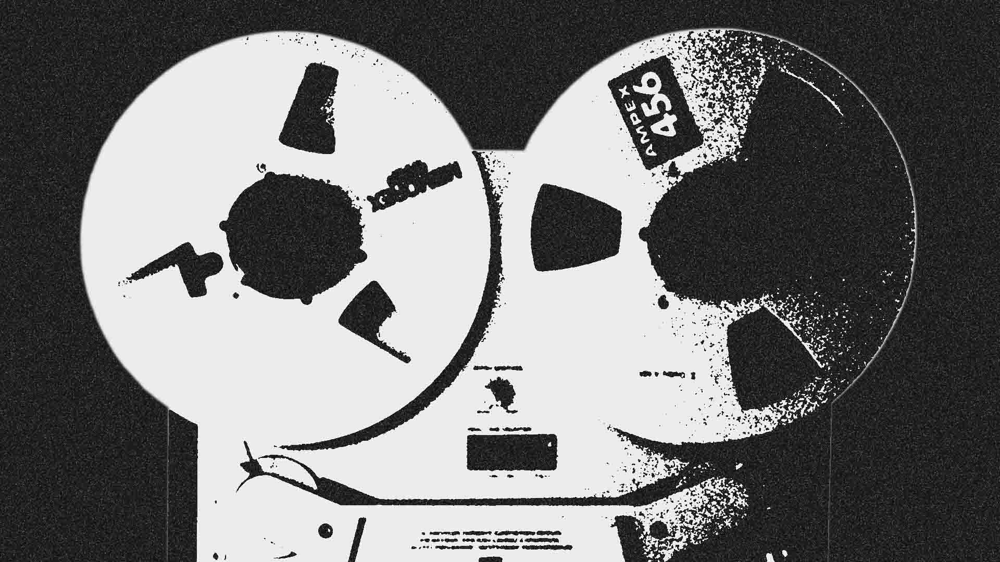

Nostalgic Modernism
By Mark Fisher • Simon is right to observe that nostalgia was a preoccupation of literary modernism: to his examples of Proust and Nabokov we can add Joyce (Ulysses as an exercise in re-creating Dublin as it was twenty years before). The difference between literary modernism and current pop, however, is that, in the case of the former, the ‘search for lost time’ involved the invention of new formal techniques.
I’m not sure that Gek-Opel’s misgivings can be waved away by the claim that there is no pop futurism around at the moment (as I recall, Simon used the same argument to defend the Arctic Monkeys). Even if pop futurism is thin on the ground at the moment, there is still the whole history of innovation and novelty in pop; if contemporary pop fails by those standards, it should be judged accordingly, and hauntology is important precisely because it forces the comparison between present pop and its antecedents.
Gek is concerned about their being not ‘enough absence, or memories of things which never existed’ in Ghost Box in particular. I think that Owen’s response to this anxiety identifies that there all kinds of ‘what ifs’ at play in Ghost Box:
What if Thamesmead or Cumbernauld had been welcomed as modernist communities by their inhabitants, and had provided models for the rest of the country? What if the BBC Radiophonic Workshop were more important than the Beatles?
My claim would be that the Radiophonic Workshop were more important than the Beatles; that the Workshop rendered even the most experimental rock obsolete even before it had happened. But of course you are not comparing like with like here; the Beatles occupied front stage in the Pop Spectacle, whereas the Radiophonic Workshop insinuated their jingles, idents, themes and special FX into the weft of everyday life. The Workshop were properly unheimlich, unhomely, fundamentally tied up with a domestic environment that had been invaded by media. Thus, nostalgia – literally, ‘homesickness’, remember – for the Radiophonic Workshop involves a craving for houses haunted by weird media.
I am about the same age as Julian and Jim from Ghost Box, so my nostalgia for the 70s is evidently determined in part by the fact that I was a child in that decade. Nevertheless, I think that Owen goes some way to establishing that there was something worth remembering about the end of what was misleadingly termed the ‘postwar consensus’. Looking back at the industrial unrest of the early 70s, it is hard to credit to the amount of conflict that was accepted as normal. It has been the decade and a half that has been the period of ‘consensus’ (= tyranny of capitalist-parliamentarian administration).
This is no licence for re-peddling the 45-79 period in pastiche packaging. But I don’t believe that Ghost Box do that. They are at their most beguiling when they foreground dyschronia – as on Belbury Poly’s ‘Caermaen’ (from The Willows) and ‘Wetland’ (from The Owl’s Map’) where folk voices summoned from beyond the grave are made to sing new songs. Dyschronia is integral to the Focus Group’s whole methodology; the joins are too audible, the samples too jagged, for their tracks to sound like simulations or refurbished artifacts.
In any case, Ghost Box conjure a past that never was. Their artwork fuses the look of comprehensive school text books and public service manuals with allusions to weird fiction, a fusion that has more to do with the compressions and conflations of dreamwork than with memory. At the same time, it is worth recalling that the Radiophonic Workshop were effectively public servants, that they were employed to produce a weirdpublic space.
The implicit demand for such a space in Ghost Box inevitably reminds us that the period since 1979 in Britain has seen the gradual but remorseless destruction of the very concept of the public. Public space has been consumed and replaced be something like the ‘third place’ exemplified by franchise coffee bars. Here, you are transported into the queasily inviting quasi-domesticated interior of one of SF Capital’s space-ships: deterritorialization (you could be anywhere) and reterritorialization (you are in surroundings whose every nuance is shinily familar). These spaces are uncanny only in their power to replicate sameness (their voracious dominance of the high street is as visually striking a sign as you could wish for of the lie that capitalism engenders competition and diversity), and the monotony of the Starbucks environment is both reassuring and oddly disorientating; inside the pod, it’s possible to literally forget what city you are in. What I have called nomadalgia is the sense of unease that these anonymous environments, more or less the same the world over, provoke; the travel sickness produced by moving through spaces that could be anywhere. The next stage will be physical spaces which resemble the interpassive consumer monads of MySpace or the IPod (Paul Morley imagines such a space in Words and Music): My, I… what happened to Our Space, or the idea of a public that was not reducible to an aggregate of consumer preferences?
In Ghost Box and Mordant Music, the lost concept of the public has a very palpable presence-in-absence, via samples of public service announcements. (Incidentally one connection between rave and GB/MM is the Prodigy’s sampling of thiis kind of announcement on ‘Charly’.) Public service announcements – remembered because they could often be disquieting, particularly for children – constitute a kind of reservoir of collective unconscious material. The disinterment of such broadcasts now cannot but play as the demand for a reurn of the very concept of public service. Ghost Box repeatedly invoke public bodies – through names (Belbury Poly, the Advisory Circle) and also forms (the tourist brochure, the textbook). It’s no accident that television – with its long-since dishonoured ‘public service remit’ – is crucial to both them and MM. Mordant oneirically pulp memories from different periods and media into a dreamed past. On Dead Air, 70s television is made to co-exist with rave and electro. Television and rave both stand for modes of collectivity that are either lost or dying, and their combination hints at a kind of collectivity that has never happened.
The public service announcement is of such importance because it is so formally similar to advertising, the most corrosive of postmodern forms. Baudrillard was right (see ‘Advertising Degree Zero’ in Simulation and Simulacra): advertising has long since exploded beyond its bounds until to consume everything else, implacably coercing all cultural processes (education as well as entertainment) into becoming adverts for themselves.
Confronted with capital’s intense semiotic pollution, its encrustation of the urban environment with idiotic sigils and imbecilic slogans no-one – neither the people who wrote them nor those at whom they are aimed – believes, you often wonder: what if all the effort that went into this flashy trash were devoted to a public good? If for no other reason, Ghost Box and Mordant Music are worth treasuring because they make us pose that question with renewed force.
← Back to All Articles